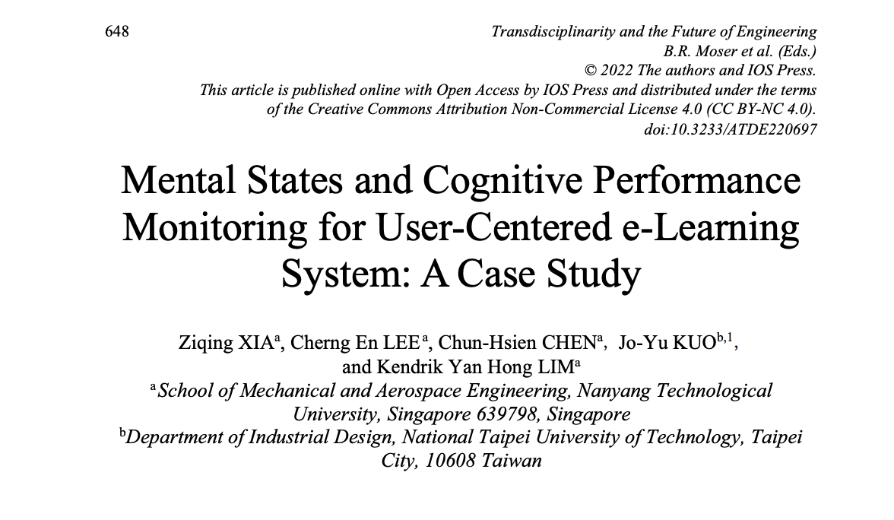
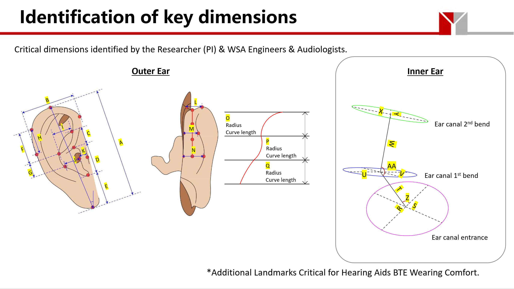
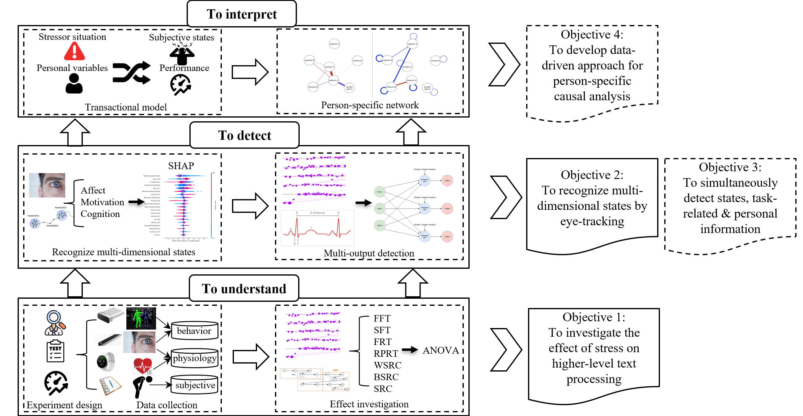
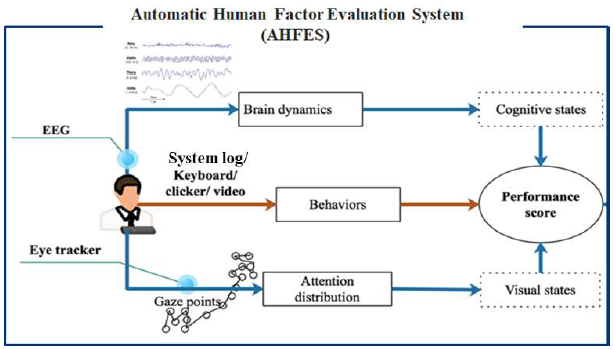

Ziqing Xia
About Me
I’m currently a fourth-year Ph.D. candidate in School of Mechianical and Aerospace Engineering (MAE) at Nanyang Technological University, advised by Prof. Chen Chun-Hsien. I received my bachelor’s degree in Industrial Design from Tianjin University in 2019.
My research interest lies on Human Factors and Ergonomics - with a special focus on AI-enabled approaches for mental states recognition and cognitive performance monitoring.
News
- [Jul. 2022] One paper was accepted to TE 2022.
Publications [Google Scholar]
-
 TEMental States and Cognitive Performance Monitoring for User-Centered e-Learning System: A Case Study29th ISTE International Conference on Transdisciplinary Engineering (TE), 2022.
Projects
-
Anthropometric assessment and analysis of asian earsThe current hearing instrument is designed and tested based on Standard KEMAR Ear, which was initially developed based on males and females from the US Air Force. However, it is unknown whether the Standard KEMAR Ear provide good representation of the polulation across different races and geographical locations. This project aims to construct a standard ear model (including pinna, concha, and external auditory canal) for Asian polulation.
-
Eye-tracking based techniques for understanding mental states and cognitive performance of students in online leariningThe Covid-19 pandemic has posed an unprecedented crisis in the education domain, leading to a worldwide transition from a face-to-face teaching mode to a online learning mode. This project specifically focuses on mental stress that students perceived in online learning context. The effect of stress on higher-level cognitive processing is investigated based on eye movement measurements.
-
Human factors based technology for enhancing operator's performanceThe project aims to propose methods for the evaluation of the operators' technical and non-technical skills and real-time monitoring of stress and fatigue during the vessel traffic operations.

Powered by Jekyll and Minimal Light theme.